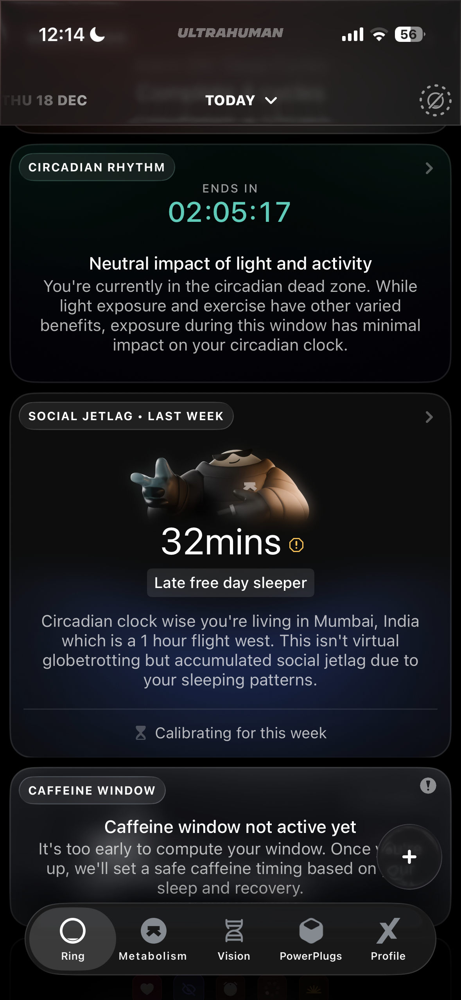
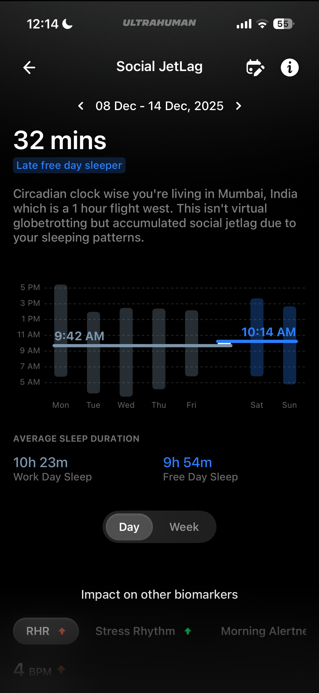
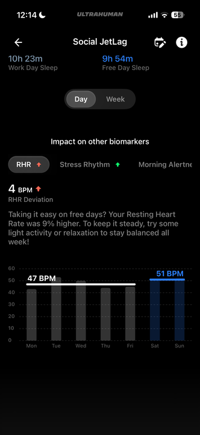
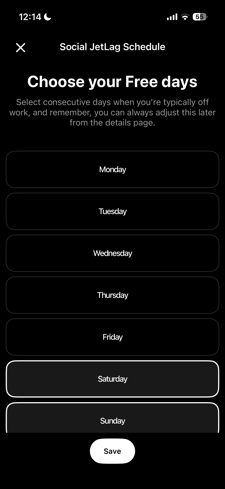

PowerPlug
Applicable Regions: Mixed
Related Tags:
Powerplugs_dataPowerplugs_tech_errorPowerplugs_app_usagePowerplugs_feedbackPowerplugs_enquiryPowerplugs_FAQPowerplugs_Refund
Overview
PowerPlugs are Ultrahuman’s next-generation platform of modular health features built on top of your Ring AIR data. They allow you to personalize your Ultrahuman experience by unlocking specific insights, capabilities, and tools that match your health goals.
Think of them as intelligent extensions of your Ring AIR – optional PowerUps designed to go deeper into areas like sleep, recovery, women’s health, heart health, or daily rhythm.
Each PowerPlug analyzes your existing physiological signals through advanced algorithms and presents science-backed insights without altering your core Ultrahuman experience. Whether it’s understanding your Vitamin D rhythm, tracking your ovulation phase, or detecting early signs of atrial fibrillation (AFib), PowerPlugs give you the freedom to choose what matters most to you.
Activation
- Open the Ultrahuman App and go to your Ring AIR homepage.
- Tap Activate more PowerPlugs.
- Browse through the available options.
- Select the PowerPlug you’d like to add and tap Get.
If it’s a premium PowerPlug, you’ll be redirected to your app store to complete your purchase. Once installed, it will appear in your active PowerPlugs list and start working seamlessly with your existing data.
Why are some PowerPlugs paid?
Some PowerPlugs require deeper computational models, medical-grade validation, or licensed algorithms that go beyond standard wellness analytics. These involve clinical testing, regulatory compliance, and data infrastructure that ensure medical accuracy and reliability.
By offering both free and premium PowerPlugs, Ultrahuman ensures everyone has access to essential wellness insights while providing more specialized, research-backed tools for those who want advanced health analysis.
Premium PowerPlugs are optional add-ons — they enhance your experience but never restrict access to Ultrahuman’s core features like sleep, recovery, stress, and activity tracking.
What are some of the PowerPlugs available today?
Free PowerPlugs
- Vitamin D PowerPlug – Understand how sunlight exposure impacts your circadian rhythm and vitamin D synthesis.
- Caffeine Window – Identify when caffeine helps versus when it disrupts your recovery and sleep.
- Circadian Alignment – Optimize activity and rest times based on your biological rhythm.
- Cycle Tracking – Predict and understand your cycle phases using multi-biomarker analysis (temperature, HRV, RHR).
- Pregnancy Insights – Track key changes and trends through different stages of pregnancy.
Premium PowerPlugs
- Cycle & Ovulation Pro – Built using clinically validated OvuSense™ technology and 15 years of research, it delivers >90% accuracy for ovulation confirmation and supports diverse cycle types including PCOS and endometriosis.
- AFib Detection – The world’s first smart ring feature capable of detecting atrial fibrillation using medical-grade PPG sensing and algorithmic validation.
- Cardio Adaptability – Advanced cardiovascular insights measuring how effectively your heart adapts to stress and recovery patterns.
Where is AFib Detection available?
AFib Detection is currently available in Europe, the UK, Turkey, and Switzerland, with expansion plans for the USA, UAE, and India underway.
Regional availability depends on regulatory clearance in each geography, ensuring that users receive medically validated and compliant reports.
Can I change my PowerPlug subscription plan?
Yes. You can manage or update your PowerPlug subscriptions directly within the Ultrahuman App:
- Go to the PowerPlugs section.
- Tap the settings icon next to any active PowerPlug.
- From there, you can switch between monthly and annual plans, restore previous purchases, or update payment options at any time.
Your data and insights remain securely stored and continue seamlessly when you modify or renew a subscription.
Explore PowerPlugs
Applicable Regions: Global
Related Tags:
Powerplugs_FAQPowerplugs_app_usage
Overview
Social Jetlag refers to the misalignment between your biological circadian rhythm and your social/work schedule.
It typically happens when your sleep timings differ between:
- Workdays (MSW — Mid-Sleep Workdays)
- Free days (MSF — Mid-Sleep Free Days)
Example: Waking at 6 AM on weekdays but sleeping until 9 AM on weekends shifts your internal clock, causing jetlag-like symptoms.
Social jetlag can lead to:
- Fatigue
- Reduced cognitive performance
- Lower morning alertness
- Mood disturbances
- Long-term metabolic & cardiovascular effects




Visualisation
1. Homepage
Shows the difference in sleep-time minima between weekdays and weekends.
Sleep time minima refers to the minimum amount of continuous sleep required for a sleep session to be considered valid or meaningful, either biologically, clinically, or by a sleep-tracking system.
How it’s used depends on context:
- In sleep science & health: minimum sleep duration needed to get restorative benefits (~6 hours).
- In sleep tracking (rings, watches, apps): threshold (2–3 hours, 4–5+ hours).
- In practical terms: Short naps or very fragmented sleep below the minima may be ignored. Hitting or exceeding the minima allows reliable sleep stage detection, recovery/readiness calculations, and more accurate trends over time.
2. Detail Page
- Graph showing MSW vs MSF
- Weekly history & visual trends
3. Biomarker Impact (Weekday vs Weekend)
- Resting Heart Rate (RHR)
- Heart Rate Variability (HRV)
- Morning Alertness
Individual Biomarker-Level Insights
RHR (Resting Heart Rate)
- Value: | Free Day Avg – Work Day Avg |
- Unit: BPM
- Title: RHR Diff.
- Insight: “Your average RHR was x% higher/lower on free days.” If equal: “Your average RHR was the same on free days and workdays.”
- Arrow Indicator: Green ↓ if Free Day < Work Day, Red ↑ otherwise.
Stress Rhythm
- Value: | Free Day Avg – Work Day Avg |
- Unit: None
- Title: Score Diff.
- Insight: “Your average Stress Rhythm Score was x% higher/lower on free days.” If equal: “Your average Stress Rhythm Score was the same on workdays and free days.”
- Arrow Indicator: Green ↑ if Free Day > Work Day, Red ↓ otherwise.
Morning Alertness
- Value: | Free Day Avg – Work Day Avg |
- Unit: Minutes
- Title: Mins Diff.
- Insight: “Your average Morning Alertness was x% higher/lower on free days.” If equal: “Your average Morning Alertness was the same on workdays and free days.”
- Arrow Indicator: Green ↓ if Free Day < Work Day, Red ↑ otherwise.
Header Insights
Calculating Phase / No Social Jetlag Yet
If at least one sleep index exists: “Your average sleep midpoint so far is at 2:05 AM.”
If no valid workday data: “No valid sleep index is present for workdays. Social Jetlag calculation will begin once a workday sleep index is available.”
If no valid free-day data: “No valid sleep index is present for free days. Social Jetlag requires at least one free-day sleep index.”
Educational Model
Title: Social Jetlag
Social Jetlag refers to the misalignment between an individual’s biological circadian rhythm and their socially imposed sleep-wake schedule, typically caused by work or school commitments. It is measured using the difference between MSW (mid-sleep on workdays) and MSF (mid-sleep on free days).
Larger differences can lead to chronic sleep deprivation, reduced cognitive performance, and adverse health outcomes. Maintaining consistent sleep timing helps minimise these effects.
How to Compute Social Jetlag
- Determine MSW (Mid-Sleep on Workdays) - Example: Sleep 11 PM → 7 AM → midpoint = 3 AM
- Determine MSF (Mid-Sleep on Free Days) - Example: Sleep 1 AM → 9 AM → midpoint = 5 AM
- Calculate Social Jetlag - Social Jetlag = MSF – MSW
Example: MSW = 3 AM, MSF = 5 AM, Social Jetlag = 2 hours.
Outlier Removal
- Remove a day if Sleep Start deviates by >4 hours from Baseline Sleep Start (workdays only).
- If no baseline is available: no outlier removal will be performed.